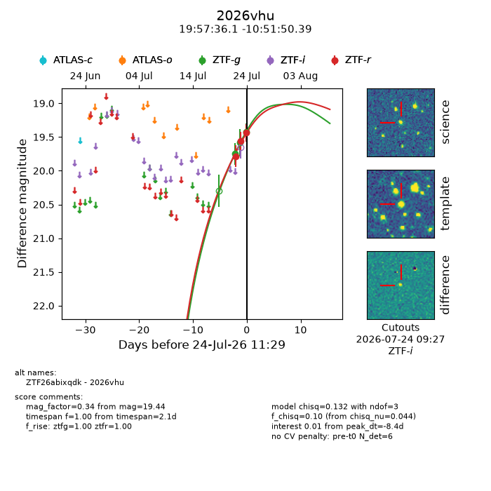
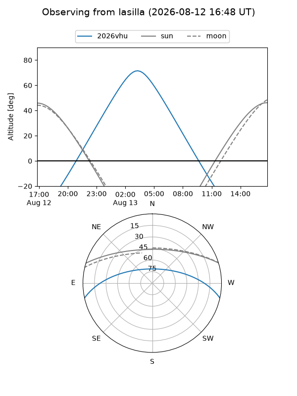
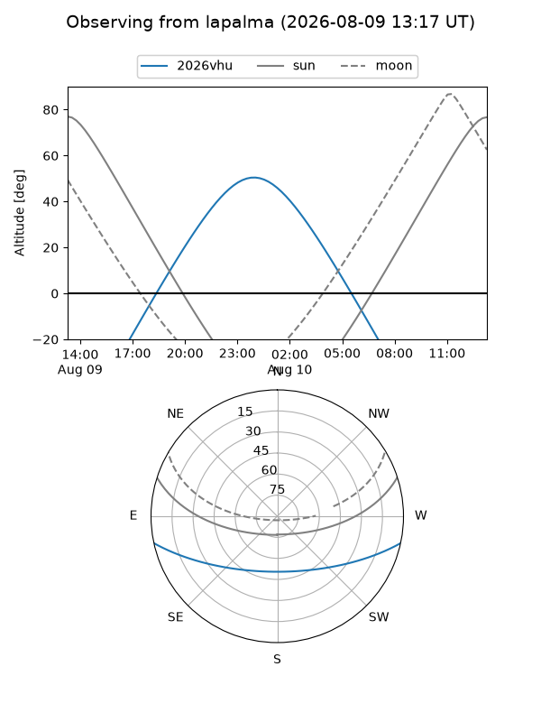
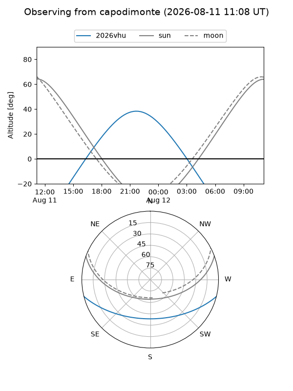
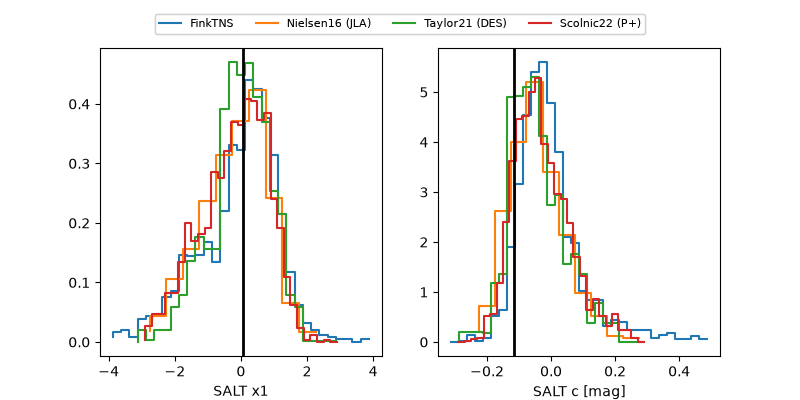

2026vhu
Target 2026vhu at 2026-07-24 11:31
Aliases and brokers:
FINK-ZTF: ztf.fink-portal.org/ZTF26abixqdk
Lasair-ZTF: lasair-ztf.lsst.ac.uk/objects/ZTF26abixqdk
ALeRCE-ZTF: alerce.online/object/ZTF26abixqdk
YSE-PZ: ziggy.ucolick.org/yse/transient_detail/2026vhu
TNS name: wis-tns.org/object/2026vhu
Direct TNS query: direct search
alt names
ZTF26abixqdk (ztf,fink_ztf)
2026vhu (tns,yse)
Coordinates:
equatorial (ra, dec) = 299.4005,-10.86400
equatorial (HMS+DMS) = 19:57:36.12,-10:51:50.39
galactic (l, b) = (30.4838,-19.55935)
Flags:
peak dt: -8.4
Photometry:
last ztfg=19.43, ztfr=19.44
3 ztfg, 3 ztfr detections
Lightcurve

Visibility



Additional plots
